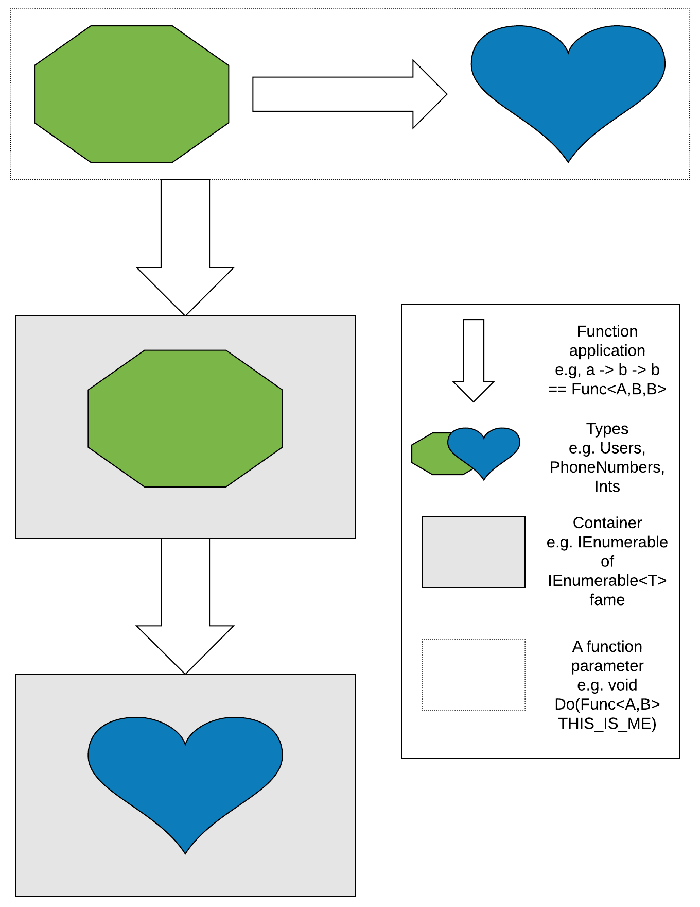
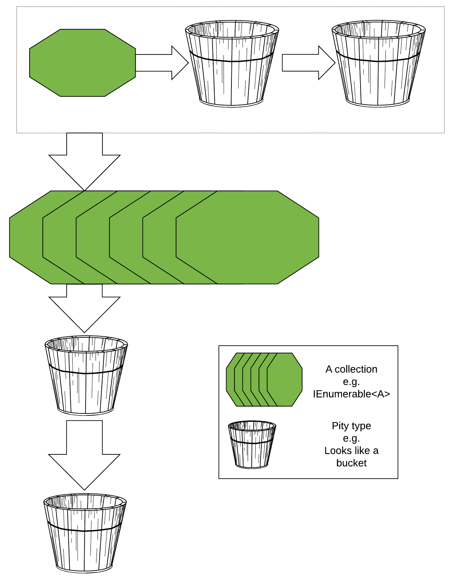
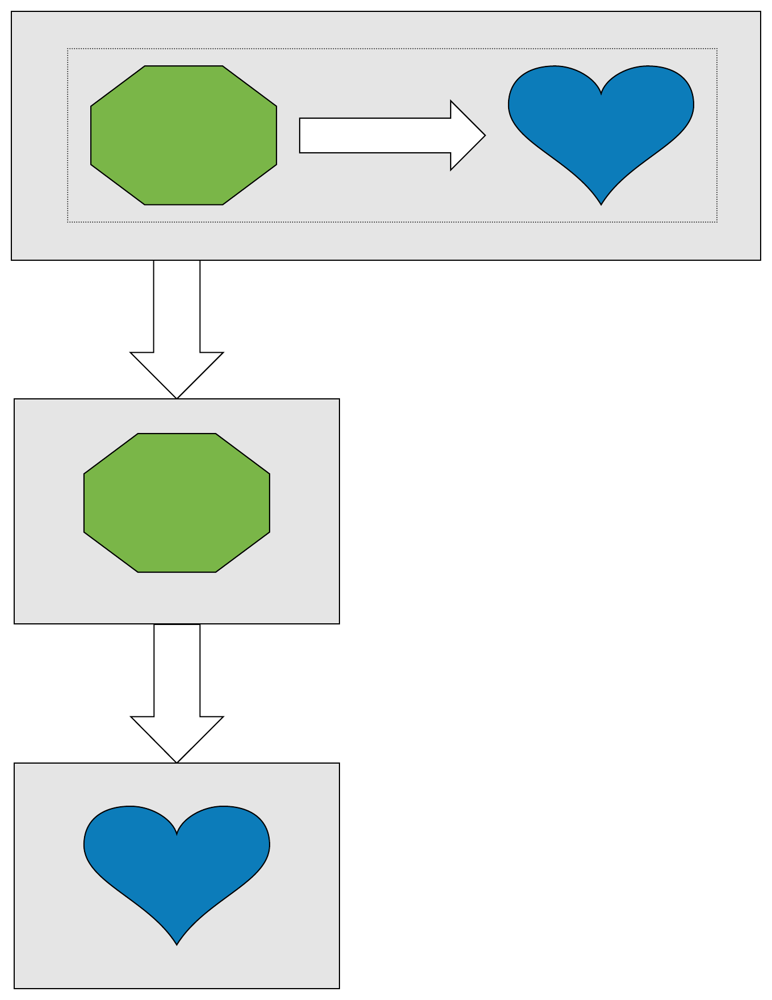
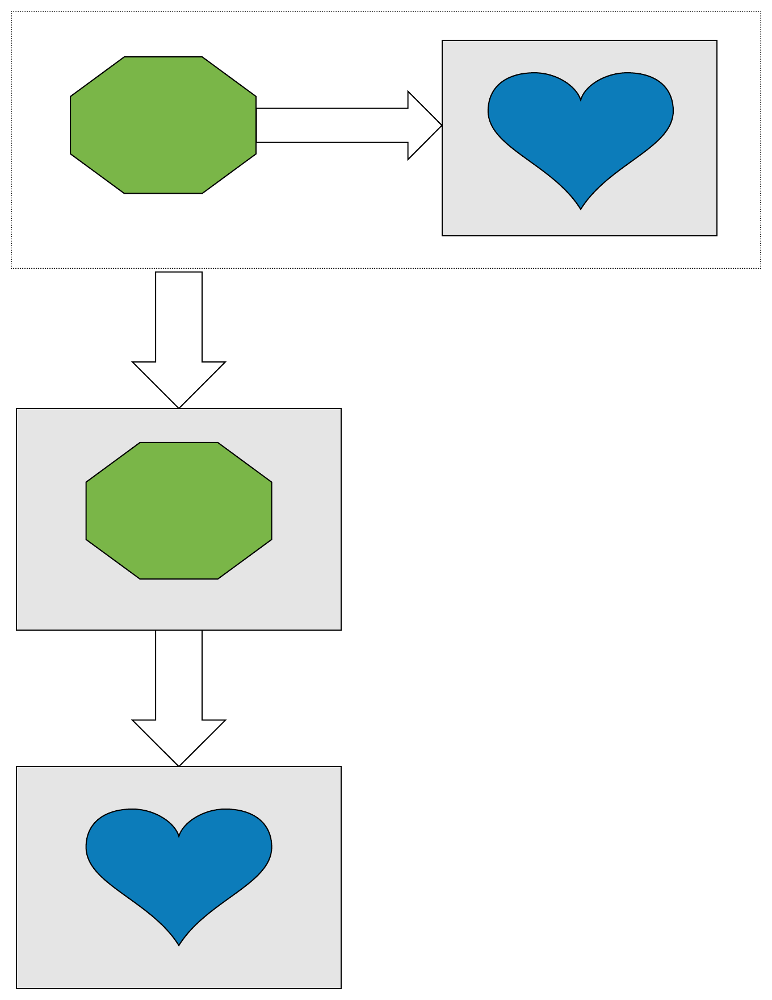
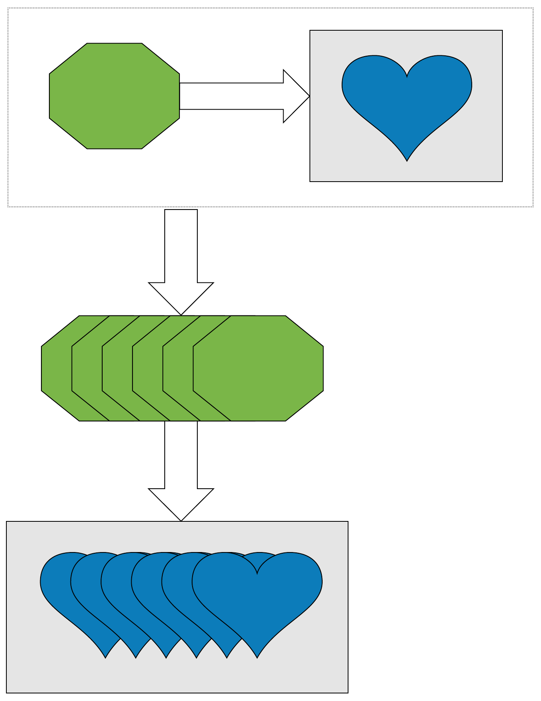

Created: 2017-09-13 Wed 11:00
 A container for values, e.g. has a type parameter. It defines an operation that lets one change the type in the context of the container.
// We can change the type of the functor from `A` to `B`. interface Functor<A> { Functor<B> Select<B>(Func<A,B> f); }
 Something we can reduce to another value, with a function combining each value in the collection.
interface Foldable<A> { B Aggregate<B>(Func<A,B,B> reduce, B initialValue); }
Aggregate in linq).A to the default value, or returns the default value). We talk about having a function inside of context, but also..
This is a step up from Functor, and needs two things:
interface Applicative<A> : Functor<A> { // Put a value into the applicative Applicative<A> Pure(A value); // Chain functions together Applicative<B> Apply(Applicative<Func<A,B>> liftedFunc, Applicative<A> val); }
This seems a little weird, but one should imagine that the B can be another Func<C,D>, so these ops can be chained.
// given an extension: Applicative<B> Apply(this Applicative<Func<A,B>> f, Applicative<A> a); Func<Int,Int> CurriedPlus(Int x) => y => x + y; new[]{ 2, 3, 4 , 3, 4, 5 , 4, 5, 6} == Pure(CurriedPlus) .Apply(Pure(new []{1,2,3})) .Apply(Pure(new []{1,2,3}));
 What if we want to have our function have some effect? We need something slightly more powerfull
interface Monad<A> : Applicative<A> { Monad<B> Bind<B>(Func<A,Monad<B>> thingToMap); }
Why?
 The highest order - imagine we want to sequence some effect through something we can fold!
interface Traversable<A> : Applicative<A> { Traversable<IEnumerable<B>> Traverse<B>(IEnumerable<A> items, Func<A,Traversable<B>> callback); }
Imagine this takes a sequence of elements, applies to callback to them, then stitches them all together.
Option will be null).class Option<A> { private class None : Option<A> {} private class Some : Option<A> { private A val; } }
OptionUnsafe.// AsOption is an extension method, and will return None. Option<string> possibleUsername = "My thing".AsOption(); Option<int> lengthOfUsername = possibleUsername .Select(name => name.Length);
Option<User> possibleUser = LoadUserFromDb(someIdParam); Option<Action> possibleAction = LoadActionDetailsFromExternalService(anotherParam); Bearded.Monads.Syntax // also, using static Bearded.Monads.Syntax; .Optionally(possibleUser) .And(possibleAction) .Then((User user, Action action) => DumpToDb(user, action));
Option<User> possibleUser = LoadUserFromDb(someIdParam); Option<Action> LoadActionFromDb(User user) => ...; Option<Action> possibleUser.SelectMany((User user) => LoadActionFromDb(user)); // .. or Option<SomethingElse> query = from user in LoadUserFromDb(someIdParam) from action in LoadActionFromDb(user) // depends on the previous value select DoSomethingElse(user, action)
List<Action> allMyUsers = LoadUserHistory(someIdParam); Option<Result> GetFinalResultFrom(Action action) => ...; // Has a value IFF all calls to GetFinalResultFrom return a value Option<List<Result>> allResultsWhenDone = allMyUsers .Traverse((Action action) => GetFinalResultFrom(action));
Option but it has a failure value, an exception.Eitherclass Try<A> { private class Error : Try<A> { private Exception val; } private class Success : Try<A> { private A val; } }
Try<User> possibleUser = dbConnectionFactory .SafeCallback(factory => factory.OpenConnection()) .Select(connection => connection.LoadUser(someIdParam));
Try<User> possibleUser = ...; Try<Action> LoadAction(User user) => ...; Try<Action> finalResult = possibleUser .SelectMany((User user) => LoadAction(user)); Try<Result> query = from user in possibleUser from action in LoadAction(user) select SomeResultFrom(user, action);
List<Action> allMyUsers = LoadUserHistory(someIdParam); Try<Result> GetFinalResultFrom(Action action) => ...; // Has a value IFF no calls threw an exception Try<List<Result>> allResultsWhenDone = allMyUsers .Traverse((Action action) => GetFinalResultFrom(action));
await etc.Task<UserName> eventualUser = LoadUser(someIdParam) .Select((User user) => user.Name); // compares: User user = await LoadUser(someIdParam); return user.Name;
Super awesome!
using static Bearded.Monads.Syntax; // other things Asynquence(LoadUserAsync(..)) .And(LoadActionAsync(..)) .And(LoadAnotherAsync(..)) .Then((User user, Action action, Another another) => DoTheThing(user, action, another); // Compare Task<User> userTask = LoadUserAsync(..); Task<Action> actionTask = LoadActionAsync(..); Task<Another> anotherTask = LoadAnotherAsync(..); Task.WaitAll(userTask, actionTask, anotherTask); DoTheThing(userTask.Result, actionTask.Result, anotherTask.Result);
Once again, compare with await syntax to get the clearest.
Task<User> possibleUser = ...; Task<Action> LoadAction(User user) => ...; Task<Action> finalResult = possibleUser .SelectMany((User user) => LoadAction(user)); Task<Result> query = from user in possibleUser from action in LoadAction(user) select SomeResultFrom(user, action); // Compare User user = await possibleUser; Action action = await LoadAction(user); Result anotherResult = await SomeResultFrom(user, action);
List<Action> allMyActions = LoadActionsFor(userIdParam); Task<Result> GetFinalResultFrom(Action action) => ...; // Has a value when all tasks finish Task<List<Result>> allResultsWhenDone = allMyActions .Traverse((Action action) => GetFinalResultFrom(action));
This is fraught with danger, as this is the type of thing that throws runtime errors.
Instead, what we want to do is to have these exceptions present at compile time
class Reader<T,A> { Func<T,A> backingField; public A Run(T value) => backingField(value); }
If you imagine we have some db library:
public Requires<ILogger,User> LoadUserFromDb(UserId id) => Requires<ILogger>.In(logger => { logger.LogInfo("Getting me a user here yo"); var sw = StopWatch.StartNew(); // The repo also needs a logger, // for debugging connection issues, etc. var result = new Repo(logger).LoadUser(id); sw.Stop(); logger.LogInfo( "Damn, this request took {0:0M}ms", sw.ElapsedMilliseconds ); return result; });
class MyController : Controller { public IActionResult GetById(int id, bool shouldDebug) { var currentRequestLogger = new CurrentRequestLogger(logger); var loggerToUse = shouldDebug ? currentRequestLogger : logger; var user = previousSlide.LoadUserFromDb.Run(loggerToUser); if(shouldDebug) { return Ok(currentRequestLogger.JsonResponseWithLogs(user)); } return Ok(user); } }
A common question is: how do I get a value "out" of the container.
For the most part, the answer is: you don't.
The ideal way to deal with this library is to think in terms of the abstractions I've presented.
Use composition instead of destructing :).
So, you want to do something to the value?
Option<Thing> something; BetterThing DoTheThingToTheValue(Thing thing); something.Select(DoTheThingToTheValue);
Now, you want to do something that also is in the same container?
Option<Thing> something; Option<BetterThing> DoSomeThingMoreEffectfulWithTheValue(Thing thing); something.SelectMany(DoSomeThingMoreEffectfulWithTheValue);
List<Thing> things; Option<BetterThing> MakeTheBetterThing(Thing thing); things.Traverse(MakeTheBetterThing); // bonus points: Try<List<Id>> hopefullyIds; Try<Thing> GetTheThing(Id id); Try<List<Thing>> things = hopefullyIds .SelectMany(ids => ids.Traverse(GetTheThing));
User actualUser; Option<User> maybeUser; Try<User> possibleUser; Task<User> futureUser; Requires<ILogger,User> loggedUser; actualUser = maybeUser.Else(() => /* create a user */); actualUser = possibleUser.ElseThrow(); actualUser = possibleUser.Unify( (User user) => ..., (Exception e) => ... ); actualUser = futureUser.Result; actualUser = loggedUser.Run(loggerFactory.Create());